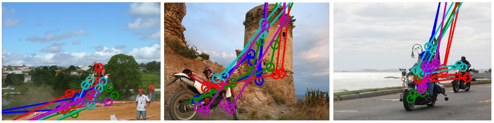
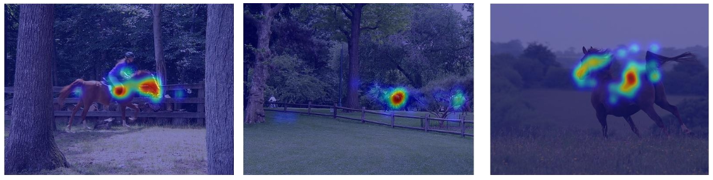

Project description
The aim of the project is to compare how Convolutional Neural Networks and Humans see the world by comparing where computer and human pay attention to during an object recognition task.
Overview
Due to the rise of Visual Attention mechanisms in machine learning it is now possible to model the cognitive process of paying attention in a computer. For a Cognitive Science course project we decided to see if the computer will choose to look at the same thing as a human does to recognize objects of 10 categories and if human eye-tracking data can be used to speed up the process of training the machine learning algorithm.The project is part of a Cognitive Science course at the University of Copenhagen.
Technologies
Python, Tensorflow, Keras, Eye-trackingTechnical Details
We use the POET dataset that provides eye-tracking data from multiple annotators that classified over 6 thousand images into 10 categories.  Source: http://calvin.inf.ed.ac.uk/datasets/poet-dataset/
The project is divided into multiple parts that explore different training environments and relationships between the machine and the human attention:- Standard CNN trained with a global pooling layer on top to gain spatially-dependent class activations (reference)
- CNN with attention (reference)
- Using eye-tracking data to improve machine learning
Here we can compare heat maps of human gaze with heat maps of which part of the CNN the model finds most meaningful for the given class and image.
We build a CNN with an explicit, sequential attention mechanism built on top of it and compare that with how humans perform the task from sequential eye-tracking data.
In the last part we would like to train the model using eye-tracking data to improve convergence or guide the model in which parts of the image are more important than others and compare the results to a standard CNN.
Results
The final report can be found here. My work can be found under sections about developing the attention visualization based on gradient theory and comparing CAM, soft attention and human attention.My contribution
I came up with the idea for the project and devised the approach. I proposed a novel approach to visualizing human attention from eye-tracking data using gradient theory.I developed a soft attention model in Tensorflow and extended an open-source CAM model. I visualized both attention mechanisms and compared them to human attention using PCC.